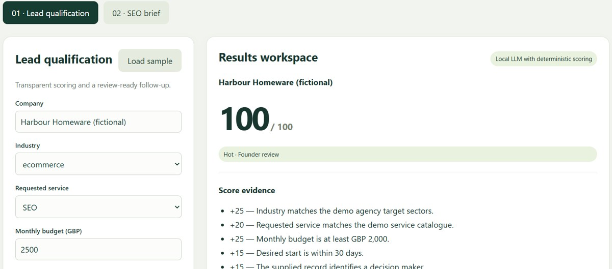
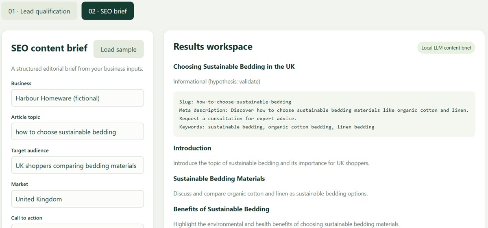

Growth Lab
AI-assisted lead qualification and SEO content briefs




Business problem
Growth teams need a consistent way to prioritise enquiries and prepare content briefs from business inputs.
Two workflows
Lead qualification
Python validates the supplied record and scores industry fit, requested service, budget, timeline and decision-maker status. The local language model generates follow-up questions and a draft response. Every score includes an evidence breakdown and a suggested review queue.
SEO content brief
A local language model generates a title, meta description, search-intent hypothesis and editorial outline from a topic, audience, market and supplied keywords. The workflow includes an editorial checklist and JSON and Markdown exports.
Implementation
Python standard-library HTTP backend, HTML/CSS/JavaScript interface, structured JSON validation, and Ollama with Qwen2.5 3B. Rules and template mode also works without a model.
Observed test results
Both workflows ran successfully with a local model on Windows. Changing the fictional lead’s monthly budget from £2,500 to £500 reduced its score from 100 to 75 and triggered a budget-review prompt. The SEO workflow produced an outline and metadata for a fictional UK homeware business.
Review and scope
Human review remains necessary: testing identified overly confident sales wording and an unsupported health-benefit suggestion. These require editing or evidence before use. No messages are sent, content published or CRM updated. This demonstration uses fictional data and reports no client revenue, traffic or ranking outcomes.
Built with AI assistance and tested locally. The source code and setup instructions are available below. A recorded walkthrough is pending. This page describes the project; it does not run the local Python or Ollama service.